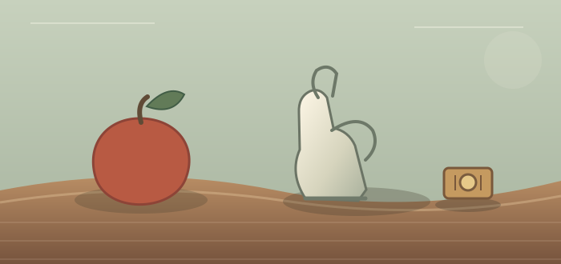

A SMALL PLACE TO PLAY
Step away
for a little.
Pick a game, find your rhythm and stay for another round. Nothing to install. Just a few good minutes.

THE SIDE ROOMISSUE NO. 01
01
Choose your game
THREE WAYS TO PLAYSnake
SCORE000
BEST000
LEVEL01
PACE1.0×
HOW TO PLAYArrow keys or W A S D to turn. On touch screens, use the direction pad. Space pauses the round.
BEST SCORE SAVED ON THIS DEVICEPOINTS0000
BEST0000
SHIFT01
HOMES SAFE03
WINDCALM
SHIFT TWOThe wind has turned.Watch the eastern ridge.
HOW TO PLAYMove your pointer to aim. Click or tap to send a water burst. On mobile, each tap aims and fires.
PROTECT THE VALLEYBlackCAPTURED: —
10:00WhiteCAPTURED: —
10:00Choose your piece
WHITE AT THE BOTTOMCLICK OR DRAG A PIECE TO MOVEPGN CAN BE COPIED AT ANY TIME